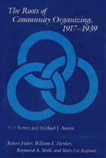

<body bgcolor="#FFFFFF" text="#000000" link="#0000FF" vlink="#CC0000" alink="#CC0000"><center><hr width="350" size="1" align="center" noshade>An illustration of pioneering community organizers<hr width="350" size="1" align="center" noshade><p><a href="https://cdcshoppingcart.uchicago.edu/Cart/ChicagoBook.aspx?ISBN=9780877226628&&PRESS=temple" target="_top">Buy this book!</a> | <a href="https://cdcshoppingcart.uchicago.edu/Cart/Cart.aspx?PRESS=temple" target="_top">View Cart</a> | <a href="https://cdcshoppingcart.uchicago.edu/Cart/Cart.aspx?PRESS=temple" target="_top">Check Out</a></p><p></p></center><!--none//--><h1>The Roots of Community Organizing, 1917-1939</h1>
<h3>Neil Betten and Michael J. Austin, contributions by Robert Fisher, William E. Hershey, Raymond A. Hohl and Marc Lee Raphael</h3>
<P>cloth 0-87722-662-8 $31.50, Jan 90, <FONT COLOR=#990033>Out of Stock Unavailable</FONT>
<BR> 230 pp
5.5x8.25
</P><P>Today's community organizers and social planners have a tendency to ignore their antecedents and to "reinvent the wheel." "What is found in textbooks today had its origins in the day-to-day, trial-and-error experiences of community organizers in the 1920s and 1930s," state Michael J. Austin and Neil Betten in their Introduction to this pioneering study of community organization. The historical analysis of the intellectual and practical roots of community organizing in the United States begins with urban political organizing in the late nineteenth and early twentieth centuries, the organizing of immigrant communities by the International Institutes beginning in 1910, and the Cincinnati Unit Experiment from 1917 to 1919.
<P>The authors and their collaborators focus on historical material that has received relatively little attention within the profession. This includes the "organizing manuals" of Steiner, McClenahan, Hart, Pettit, and Lindeman; the emergence, in the 1920s, of physical planning as practiced by city planners and social survey research as practiced by social planners; and the social action approach to community organizing with special reference to organizing the working class. "There is clearly a dualism in this work," comment Betten and Austin. Not only does the book provide insight into the background of community organizing stemming from various social agencies, but it also explores the activities of people and groups that were organizing communities but did not consider themselves community organizers. These include the socialists involved with the Cincinnati Unit Experiment, political machines, an the Catholic Worker Movement.
<P>While the study encompasses a time period from the last years of the nineteenth century to the end of the 1930s, it focuses primarily on the years from 1917 to 1939, when community organizing associated with the social work profession was emerging. The study ends in 1939 with the Lane Report, which was the first effort to identify the educational foundations for training future community organizers.
<BR>&nbsp;<h2>Excerpt</h2><P>Excerpt available at <a href="http://www.temple.edu/tempress">www.temple.edu/tempress</a></p>
<BR>&nbsp;<h2>Contents</h2><P>
<P>Preface
<p><b>Part I: Identifying the Roots</B>
<BR>The Roots of Community Organizing: An Introduction &#149 The Intellectual Origins of Community Organizing
<p><B>Part II: Locality Development</B>
<BR>The Cincinnati Unity Experiment, 1917-1920 &#149 The International Institutes: Their Philosophy and Role in Community Organizing &#149 Grass Roots Organizing in the Community Center Movement, 1907-1930 &#149 Rural Organizing and the Agricultural Extension Service
<p><B>Part III: Social Planning</B>
<BR>Social Planning and Physical Planning &#149 Federated Philanthropy in a Jewish Community, 1904-1939
<p><B>Part IV: Social Action</B>
<BR>The Urban Political Boss as Community Organizer &#149 The Conflict Approach to Community Organizing: Saul Alinsky and the CIO &#149 Religious Organizations as a Base for Community Organizing: The Catholic Worker Movement during the Great Depression
<p><B>Part V: Epilogue</B>
<BR>The Legacy of Community Organizing at the Close of the Great Depression
<p>Notes
<BR>Index
</P><BR>&nbsp;<H2>About the Author(s)</H2>
<P><B>Neil Betten</B></A> is Professor and Chair of the Department of History at Florida State University.</P>
<P><P><B>Michael J. Austin</B> is Professor and Dean of the University of Pennsylvania School of Social Work.</P>
<P>Contributors: Robert Fisher, William E. Hershey, Raymond A. Mohl, and Marc Lee Raphael.</P>
<BR><H2>Subject Categories</H2>
<p><A HREF="/tempress/sociology.html" TARGET="_top">Sociology</a>
<BR><A HREF="/tempress/history.html" TARGET="_top">History</a>
</p>
<p align="center"><a href="https://cdcshoppingcart.uchicago.edu/Cart/ChicagoBook.aspx?ISBN=9780877226628&&PRESS=temple" target="_top">Buy this book!</a> | <a href="https://cdcshoppingcart.uchicago.edu/Cart/Cart.aspx?PRESS=temple" target="_top">View Cart</a> | <a href="https://cdcshoppingcart.uchicago.edu/Cart/Cart.aspx?PRESS=temple" target="_top">Check Out</a></p><p><font face="Arial" size="1"><a href="copyright.html" onMouseOver="window.status='Web Copyright Policy';return true;" onMouseOut="window.status=''" title="Web Copyright Policy">&copy;</a> 2015 <a href="http://www.temple.edu" target="new" onMouseOver="window.status='Link to Temple University home page';return true;" onMouseOut="window.status=''" title="Link to Temple University home page">Temple University</a>. All Rights Reserved. http://www.temple.edu/tempress/titles/543_reg.html</font></p>